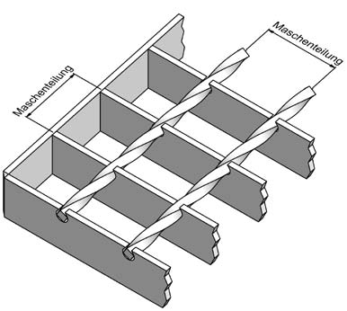
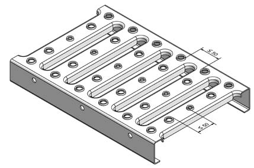
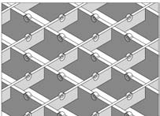
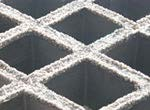
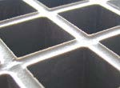
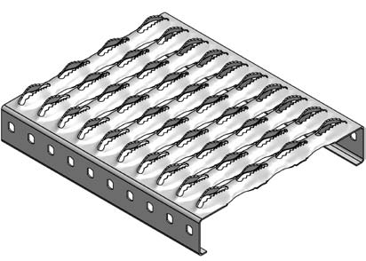

Bereits bei der Planung von Arbeitsbereichen und Verkehrswegen, z. B. Laufstege, Treppen, Grubenabdeckungen, muss auf die sachgerechte Auswahl geeigneter Roste geachtet werden. Dies setzt voraus, dass alle Anforderungen, denen die verlegten Roste im speziellen Anwendungsfall entsprechen sollen, berücksichtigt werden.
Zu solchen Anforderungen gehören z. B.
Bei der Planung der Tragfähigkeit sind die jeweils zu erwartenden Belastungsarten und -verteilungen zu berücksichtigen. Es müssen gegebenenfalls außer der normalen Belastung auch kurzfristig auftretende höhere Belastungen berücksichtigt werden. Ausschnitte in Rosten, z. B. für die Durchführung von Rohren, bewirken eine örtliche Minderung der Tragfähigkeit. Diese muss durch geeignete Maßnahmen ausgeglichen werden.
Geeignete Maßnahmen in Abhängigkeit vom Ausmaß örtlicher Minderungen der Tragfähigkeit sind z. B.
Bei Gitterrosten, deren Tragstäbe in der Gehebene Ausnehmungen zur Erhöhung der Rutschhemmung aufweisen, muss die durch die Ausnehmungen bedingte Minderung des Querschnitts- und Widerstandsmoments für die Tragfähigkeit berücksichtigt sein.
Im Regelfall wird eine der folgenden Belastungsarten zu berücksichtigen sein:
Die Belastungen können statisch oder dynamisch auftreten.
Einzellasten durch Raddruck von Fahrzeugen und entsprechende Lastangriffsflächen.
Einzellasten durch Personen auf Gitterrosten; siehe RAL-GZ 638 „Güte- und Prüfbestimmungen für Gitterroste“.
Bei der Auswahl von Gitter- bzw. Blechprofilrosten sind die Hinweise der Hersteller auf Material, zulässige Spannungen und Sicherheitsfaktoren zu berücksichtigen (Belastungstabellen). Die Länge von Rosten entspricht der Tragstabrichtung, auch wenn dieses Maß kleiner als die Breite ist.
Die Hersteller sowohl von Metall- als auch Kunststoffrosten geben Belastungstabellen für ihre Erzeugnisse heraus.
In Belastungsfällen, die in Belastungstabellen nicht berücksichtigt sind, sind entsprechende statische Berechnungen zur Auswahl geeigneter Roste durchzuführen.
Es empfiehlt sich, hierzu einschlägig erfahrene Statiker, z. B. den Hersteller von Gitter- bzw. Blechprofilrosten, heranzuziehen.
Um Stolperstellen an Stoßstellen von Gitter- bzw. Blechprofilrosten zu vermeiden, müssen die unter Last auftretenden Durchbiegungen innerhalb bestimmter Grenzen bleiben. Zulässig ist eine elastische Durchbiegung von bis zu 1/200 der Stützweite, auch in den Bereichen mit Verschraubung. Die Elemente dürfen an den Stoßstellen eine Höhendifferenz von 4 mm zum benachbarten Bodenbelag nicht überschreiten.
Für die Maschenweite von Rosten (Abb. 7) ergeben sich maßliche Begrenzungen unter Berücksichtigung folgender Faktoren:
Bei Gitterrosten, die in öffentlichen Verkehrswegen verlegt werden sollen, z. B. vor Eingängen von allgemein zugänglichen Gebäuden oder vor Schaufenstern, muss die Maschenweite klein gehalten werden. Für die genannten Bereiche sind Roste erforderlich, deren Maschen in einer Richtung die lichte Weite von 10 mm nicht überschreiten, um die Stolpergefahr durch Hängenbleiben von Schuhabsätzen zu vermeiden.
Roste, die sowohl für Schüttgut durchlässig sind als auch von Beschäftigten begangen werden, müssen so beschaffen sein, dass die lichten Maschenweiten oder Öffnungen bei quadratischer Form nicht mehr als 60 mm x 60 mm, bei rechteckiger Form nicht mehr als 120 mm x 40 mm betragen.
Bei Gitterrosten auf Arbeitsbühnen und deren Zugängen dürfen die Maße der Maschenteilung 34 mm x 51 mm nicht überschreiten, wenn die Voraussetzungen nach Abs. 3.3 nicht gegeben sind.

Abb. 7 Maschenteilung
Bei benachbarten Aufwölbungen oder Lochrändern sollte der lichte Abstand in keiner Richtung mehr als 50 mm voneinander betragen, um die Begehbarkeit ohne Kippen des Fußes zu gewährleisten (Abb. 8).

Abb. 8 Lichter Abstand zwischen benachbarten Aufwölbungen und Lochrändern
In Arbeitsräumen und Arbeitsbereichen, deren Fußböden nutzungsbedingt mit gleitfördernden Medien in Kontakt kommen, müssen die begehbaren Oberflächen der Roste die Anforderungen an die Rutschhemmung erfüllen. Bei der Planung ist zu beachten, dass aneinandergrenzende Flächen in ihrer Rutschhemmung nur um eine Bewertungsgruppe voneinander abweichen dürfen (siehe ASR A1.5/1,2 "Fußböden","Fußböden in Arbeitsräumen und Arbeitsbereichen mit Rutschgefahr" BGR/GUV-R 181).
Bei Gitterrosten wird eine Erhöhung der Rutschhemmung, z. B. durch sägezahnartige oder halbrunde Ausnehmungen oder Noppen auf der Oberseite der Trag- und Querstäbe (Abb. 9a und 9b) bzw. bei breiten Trag- und Querstäben durch den Auftrag von kunstharzgebundenen, rutschhemmenden Substanzen, wie trockenem Quarzsand bestimmter Körnung, erreicht.
Rutschhemmende Profilerhebungen sollten nicht höher als 2 mm über die Quer- und Tragstäbe hinausragen.
Abb. 9a Ausnehmungen in den Querstäben

Abb. 9b Noppen auf der Oberseite der Trag- und Querstäbe
Bei Kunststoffgitterrosten trägt die besandete oder konkave Oberfläche zur Verbesserung der rutschhemmenden Wirkung bei (Abb. 10a und 10b). Deshalb muss bei Kunststoffrosten, die während des Betriebs z. B. zum Reinigen gehoben und gewendet werden, auf das seitenrichtige Einsetzen geachtet werden. Dies gilt besonders für einfarbige Kunststoffroste. Beispielsweise ist die konkav ausgebildete Oberfläche immer die zu begehende Seite, d. h. oben (Abb. 10b). Die Unterseite ist glatt und weist unter Umständen eine bis zu zwei RGruppen geringere Rutschhemmung auf. Hinweise zur richtigen Verlegung bieten die Hersteller. An den Arbeitsplätzen, an denen die Roste häufiger aufgenommen werden, sollten Hinweistafeln oder Piktogramme die richtige Verlegung darstellen.

Abb. 10a GFK-Rost mit besandeter Oberfläche

Abb. 10b GFK-Rost mit konkaver Oberfläche

Abb. 11 Sägezahnartige Ausbildung der aufgewölbten Ränder von Ausstanzungen
Während der betrieblichen Nutzung muss die rutschhemmende Beschaffenheit der begehbaren Oberflächen erhalten oder durch besondere Reinigungsmaßnahmen sichergestellt werden. Die Veränderung der Rutschhemmung durch Verschleiß ist möglich, was den Austausch der Roste erfordern könnte.
Bei der Auswahl der Korrosionsschutzmaßnahmen sind die Einsatzbedingungen der Roste zu berücksichtigen.
Bei geringerer Korrosionsgefahr, z. B. in Innenbereichen, sind kunststoff- oder lackbeschichtete Roste verwendbar.
Roste aus Stahl werden häufig in feuerverzinkter Ausführung entsprechend DIN EN ISO 1461 „Durch Feuerverzinken auf Stahl aufgebrachte Zinküberzüge (Stückverzinken) – Anforderungen und Prüfung“ verwendet.
Für Verwendung in bestimmten Chemiebereichen werden Roste auch mit Bitumen beschichtet. Für Einsatzbereiche mit extrem hoher Korrosionsgefahr oder für die Verwendung in Bereichen der Lebensmittelherstellung, die den Hygieneverordnungen der Länder unterliegen, werden Roste auch aus rostfreiem Stahl hergestellt.
Aus synthetischem Werkstoff hergestellte Gitterroste unterliegen auch ohne Beanspruchung einem Alterungsprozess, der insbesondere von der Stärke der ultravioletten Strahlung sowie von klimatischen und anderen Umwelteinflüssen abhängig ist. Additive, wie Härter oder UV-Stabilisatoren, bestimmen die speziellen Eigenschaften des Kunststoffrostes.